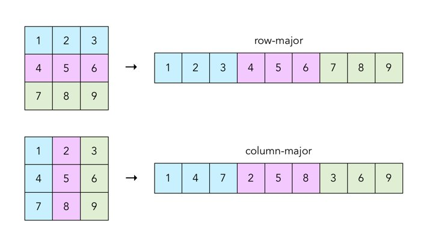
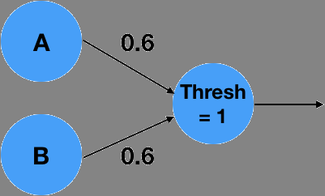
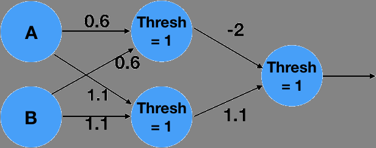
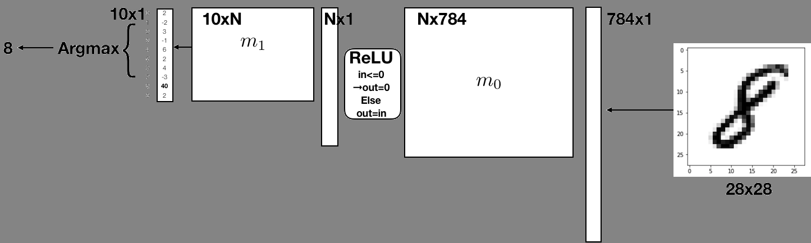
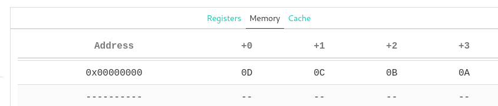

Project 2: CS61Classify
Background
Part A Due Thursday, October 1st
Part B Due Monday, October 5th
At the end of this project you will have written all RISC-V assembly code necessary to run a simple Artificial Neural Network (ANN) on the Venus RISC-V simulator. In part A you will implement the basic operations such as a vector dot product, matrix-matrix multiplication, the argmax and an activation function. In part B you will combine these basic functions in order to load a pretrained network and execute it to classify handwritten digets from the MNIST benchmark set.
Objectives
- TSWBAT (“The Student Will Be Able To”) implement numerical computation functions in RISC-V assembly that follow calling the convention.
- TSWBAT call functions in RISC-V assembly.
- TSWBAT write RISC-V assembly programs that utilize the heap and interact with files.
- TSWBAT write a test suite that covers corner cases and automatically checks for the correct operation of the RISC-V functions implemented.
Getting Started
Please follow the directions here to get a repository: https://docs.google.com/forms/d/e/1FAIpQLSe2JEIVWc1HMV-gadLvrL2jM42Zzf3_S3BixjJluRWB2IToBA/viewform?usp=sf_link.
Then, clone your repository locally and add the starter remote
$ git clone https://github.com/61c-student/fa20-proj2-TEAMNAME.git
$ cd fa20-proj2-TEAMNAME
$ git remote add starter https://github.com/61c-teach/fa20-proj2-starter.git
If you ever want to pull updated starter code, you’d execute the following command:
$ git pull starter master
Java and Python 3 Setup
Your computer needs be able to run some Java and Python 3 scripts for this project. Most of your computers should be set up properly from 61A and 61B. If not, these CS61A and CS61B setup instructions should help. You are also welcome to work on the hives.
Part A: Mathematical Functions
Due Thursday, October 1st
In this part, you will implement some of the matrix operations used by neural networks
These include a dot product,
matrix multiplication,
an element-wise rectifier function (ReLU),
and an argmax function for vectors.
But first we will start with a simple abs function which calculates the
absolute value of a given integer.
General Advice and Grading
- Pay close attention to the function definition in the assembly template.
- Implement all argument checks required and call
exit2to abort with the correct error code. - Pay close attention to the calling convention.
- While the unit tests will run the calling convention checker there are many errors that the automated check might miss.
- Try to write a unit test for every corner case in the specification that you can think of.
- While the unit tests display how much of your implementation is covered by your tests, 100% coverage of your implementation does not imply that all corner cases of the spec are covered.
- This semester you will be graded on the quality of your tests, for part A, your unit tests should cover 100% of your custom code.
- For part B, we require 100% coverage for
read_matrixandwrite_matrix. - The autograder will give you the result of a basic sanity test but will not give you your complete grade.
- You are responsible for developing any tests you need to make sure that you meet the requirements of the project.
- Even though we have given you a testing framework which allows for the calling convention feature of Venus to run, we still recommend that you write thorough a calling convention test for each function.
- The autograder is rate limited: each submission consumes a token, you will be given 6 tokens; each token will regenerate after twelve hours; get started early to limit the number of last-minute resubmissions.
- If you do not have a token, that submission will not be graded–even after the deadline has passed.
Task 0: Getting Started with the Abs Function
The Purpose of this section is to get you acquainted with the recommended workflow using the unit testing framework and the Venus simulator to better prepare you to complete this project successfully. Follow along with the video linked below or continue reading the written spec.
Task 0: Getting Started with the Abs Function Video
Running Tests
We want to start by running all the given sanity tests to verify that they fail since we haven’t started implementing anything. In order todo that run the following commands:
cd unittests
python3 -m unittest unittests.py -v
To see the specific assembly tests that the testing framework has generated cd assembly
and view all the different .s test files directly.
For now let’s remove all the assembly tests and worry just about our tests targeting the Abs function.
To remove all tests and rerun just the Abs function tests run the following:
rm -rf assembly
python3 -m unittest unittests.TestAbs -v
Hint: The command to run the unit tests has two options to keep in mind unittests.<testName>
targets a specific suite of tests and -v triggers verbose output.
Note: The unit tests are using the standard Python unittest library.
Notice that test_one fails while test_zero passes; now let’s debug this function using the Venus Web Interface!
Debugging Tests with Venus Web Interface
Using the Venus web interface, we can step through our assembly code and inspect registers to find out
why the test_one for the Abs function is failing.
As the first step we must first upload our files to the Venus Web Interface
Mounting Repository to Venus Web Interface
Run the following command from your local terminal within the root of your project 2 repository
java -jar tools/venus.jar . -dm
When you run it, you should see a Javalin message, launching the server and listening on http://localhost:6161/
Then run the following command from your Venus Web Interface Terminal.
Note: We recommend using the Chrome browser. Other browsers may work but have not been tested.
mount local proj2
This will mount the repository and give you access to all your project files from within the Venus Web Interface to edit, run, and debug! Navigate to the Files tab on Venus to see your repositories contents.
(Alternative) Zipping Files to Upload
Use this in case the file mounting does not work on your computer.
To see full list of commands supported by Venus you can run help,
but we’ve included some of the ones related to zipping below
upload: Opens up a window allowing you to pick files from your local machine to upload to Venusunzip <ZIP_FILENAME>: Unzips a.zipfile into the current working directory.zip <ZIP_FILENAME> <FILENAME_1> <FILENAME_2> ...: Opens up a window allowing you to download a zip file calledZIP_FILE_NAME, which contains all the specified files and/or folders. Folders are added to the zip file recursively.
When uploading files to the Venus web interface, you’ll want to zip ONLY your src, inputs,
and unittests/assembly directories locally, use the upload in the Venus terminal to upload that zip file,
and then unzip to retrieve all your project files.
Alternatively, you can upload individual files to work with.
However, you’ll need to make sure the directory structure is the same as the starter repo,
or be prepared to edit the relative paths given to you in the starter code for inputs and .import statements.
Note: We HIGHLY recommend that you regularly copy the changes you’ve made in the Venus web interface
to your local machine to save them. If you accidentally close the browser window or run edit before running save,
you could lose a large amount of progress if you do not enable ‘Save on Close’.
This is one of the primary reasons we recommend running with the .jar file for most of your development,
and only turning to Venus to debug one specific file at a time.**
Note2: If you do use ‘Save on Close’ (which you all should), be aware that there is a limit to the size of its state which it can store (limited by your browsers localStorage). This is why we say you should only upload the specified directories.**
Debugging test_one on Venus Web Interface
Navigate to the Files tab on Venus to see your files, and navigate to the abs.s file in proj2/src/abs.s
and click edit.
Then using an ebreak statement set a breakpoint right above the command mv a0, zero
Note: This is one out of two ways to set breakpoints in Venus.
The other way is to click on any instruction (besides ebreak) in the simulator view.
If you click on an ebreak instruction, it will disable the breakpoint instead.
One scenario where this comes in handy is when you added an ebreak inside a loop
and - after observing the first few iterations - want to disable it to let the loop finish
executing.
Now before running test_one, go back to the Files tab and hit Save on the abs.s file.
After saving, navigate to unittests/assembly/TestAbs_test_one_test.s and click VDB.
This will launch you into the Simulator tab!
Note: When the editor tab is active, you can also use Ctrl + S to save the open file.
Now using your basic Venus knowledge from lab3 you can run and step through the test to see a0
being overridden from a 1 to a 0.
Editing the Abs Function to pass test_one
Let’s remove the statement mv a0, zero from abs.s and rerun test_one.
Observe that test_one indeed does pass after removing the one line of code;
however, the absolute value function is still incorrect!
This toy example is to show that your code is only as good as how thorough your test cases are.
Adding More Tests for Abs Function
Let’s add another test to check if the function works with negative values.
To do this open the file unittests/unittest.py
Add this test underneath class TestAbs(TestCase)
def test_minus_one(self):
t = AssemblyTest(self, "abs.s")
t.input_scalar("a0", -1)
t.call("abs")
t.check_scalar("a0", 1)
t.execute()
Note: By modifying just t.input_scalar and t.check_scalar we can build a brand new test!
Now rerun just the Abs Function tests to verify that this test now fails while test_zero and test_one pass.
This is an important step in test driven development to make sure that the tests we wrote fail before implementing
the function:
python3 -m unittest unittests.TestAbs -v
Editing Abs Function to pass test_minus_one
Insert the following code into abs.s
# branch if positive
bge a0, zero, done
# invert a if negative
sub a0, zero, a0
Now all Abs Function tests should pass!
Let this be a warning to write good tests and produce well commented code. Happy coding!
Background Knowledge
Matrix Format
In this project, all two-dimensional matrices will be stored as one-dimensional arrays in row-major order. Row-major order stores all values in a row of a matrix consecutively and concatenates all row vectors into a single 1-D array starting from the top-most row. The alternative column-major order stores all values in a column of a matrix consecutively and concatenates all columns vectors into a single 1-D array starting from the left-most column. Our choice of row-major order follows the convention of most C/C++ programs.

Array Strides
The stride of an array
is the number of bytes between the beginning of
consecutive array elements.
So far all arrays we have worked with had unit stride, meaning that there
is not gap between consecutive elements and the stride is sizeof(element).
In this project, all strides will be given in multiples of the element size
instead of bytes.
Thus the unit stride is just 1.
We are going to use the stride to define column vectors in our matrix (stored in row-major order) without having to copy any elements. Since row elements are stored consecutively, a row vector is just an array with unit stride. However, if we want to get the column vector, we need to skip over the end of the current row and the beginning of the next row to get to the next element in the column. Thus the stride will be the number of elements in a row.
Here is a practical example: We have the vector int *a with 3 elements.
- If the stride is 1, then our vector elements are
*(a),*(a + 1), and*(a + 2), in other wordsa[0],a[1], anda[2]. - However, if our stride is 4, then our elements are at
*(a),*(a + 4), and*(a + 8)or in other wordsa[0],a[4], anda[8].
To summarize: In C code, to access the ith element of a vector
int *a with stride s, we use *(a + i * s), or a[i * s].
We leave it up to you to translate this memory access pattern into RISC-V
for the dot product in task 3.
Task 1: ReLU
Implement the relu function in src/relu.s which takes in a 1D vector and
applies the rectifier function
on each element, modifying it in place.
This is equivalent to setting every negative value in the vector to 0.
Be careful to follow the specification in the header comment in the relu.s file.
Note: Our relu function operates on a 1-D vector, not a 2-D matrix.
Since relu works on an element by element basis, independent of the
position of that element in the matrix, we are able to treat our 2-D matrix
which is stored in row-major format as a 1-D vector.
Hint: You can run the unit test that we provide you for this task by
running the following command in the unittest directory:
python3 -m unittest unittests.TestRelu -v
Hint: to achieve 100% test coverage you will need to add your own tests to cover all the corner cases in the spec. Think carefully about every branch in your implementation.
Task 2: ArgMax
The argmax function returns the index of the largest element in a vector. It will be used at the end of our neural network to select the most likely classification.
Implement the argmax function in src/argmax.s which takes in a 1D vector
and returns the index of the largest element.
Be careful to follow the specification in the header comment in the argmax.s file.
Hint: You can run the unit test that we provide you for this task by
running the following command in the unittest directory. Fill in the TODOs in unittests.py to make it work:
python3 -m unittest unittests.TestArgmax -v
Task 3.1: Dot Product
The dot product of two vectors \(a\) and \(b\) is defined as \(dot(a, b) = \sum_{i=0}^{n-1} a_ib_i = a_0 * b_0 + a_1 * b_1 + \cdots + a_{n-1} * b_{n-1}\), where \(a_i\) is the \(i\)th element of \(a\).
Implement the dot function in src/dot.s which takes in two vectors
and returns their dot product.
Be careful to follow the specification in the header comment in the dot.s file.
Note: This function takes in the stride for each vector as an argument. Make sure you’re considering this when calculating your memory addresses. Consider re-reading the section on array strides in the background materials.
Note: We do not expect you to handle overflow when multiplying.
This means you will not need to use the mulh instruction.
Note: keep in mind that - like in C - there is no way for the function to verify that the vector length argument actually matches the size of memory allocated for the vector.
Testing: Dot Product
You can run the unit test that we provide you for this task by
running the following command in the unittest directory.
Fill in the TODOs in unittests.py to make it work:
python3 -m unittest unittests.TestDot -v
A basic test provides the dot function with two vectors
v0 and v1 of size 9 and unit stride. We thus expect the following
result:
v0 = [1, 2, 3, 4, 5, 6, 7, 8, 9]
v1 = [1, 2, 3, 4, 5, 6, 7, 8, 9]
dot(v0, v1) = 1 * 1 + 2 * 2 + ... + 9 * 9 = 285
Implement this test using the methods provided by the AssemblyTest class.
Now fill in the test_stride function.
What should happen if you change the length of the vectors to 3 and
the stride of the second vector v1 to 2,
without changing the values in static memory?
Now, the vectors contain the following:
v0 = [1, 2, 3]
v1 = [1, 3, 5]
dot(v0, v1) = 1 * 1 + 2 * 3 + 3 * 5 = 22
Note: v1 now has stride 2, so we skip over elements in memory
when calculating the dot product.
However, the pointer v1 still points to the same place as before:
the start of the sequence of integers 1 to 9 in memory.
Hint: as before, you will need to add multiple test to achieve 100% coverage.
Task 3.2: Matrix Multiplication
The matrix multiplication of two matrices \(A\) and \(B\) results in the output matrix \(C = AB\), where \(C[i][j]\) is equal to the dot product of the \(i\)-th row of \(A\) and the \(j\)-ith column of \(B\).
Note: If the dimensions of \(A\) are \((n * m)\), and the dimensions of \(B\) are \((m * k)\), then the dimensions of \(C\) must be \((n * k)\).
Note: Unlike integer multiplication, matrix multiplication is not commutative, \(AB \neq BA\).
Implement the matmul function in src/matmul.s which takes in
two matrices, m0 and m1 in row-major format and multiplies them,
storing the resulting matrix C in pre-allocated memory.
You must use the dot function from the previous task to calculate
each entry of the result matrix.
Be careful to follow the specification in the header comment in the matmul.s file.
Note: m0 is the left matrix, and m1 is the right matrix.
Hint: The stride for row vectors will be different than the stride for
column vectors when calling the dot function.
Consider re-reading the section on array strides in the
background materials.
Testing: Matrix Multiplication
We only provide a skeleton test for matrix multiplication. By now you should be familiar with how to use the testing framework.
You can run the unit test by running the following command in the unittest directory:
python3 -m unittest unittests.TestMatmul -v
Hint: as before, you will need to add multiple test to achieve 100% coverage.
Submitting Your Code
Please submit using Gradescope to Project 2A, using the GitHub submission option to ensure that your files are in the right place.
Note: you should not add any .import statements to the starter code.
For example, when the autograder is importing matmul.s, it will also import
dot.s and utils.s, so your matmul.s file itself should never
contain any .import statements.
Note: also make sure to not have any ecall instructions in your code.
Use the functions we provide in utils.s.
Hint: make sure to consult the general advice and grading section if you want to improve your submission.
Part B: File Operations and Main
Due Monday, October 5th
In this part, you will implement functions to read matrices from and write matrices to binary files. Then you will combine all individual functions to run a pre-trained MNIST digit classifier.
Background Knowledge
Neural Networks
At a basic level, a neural networks tries to approximate a (non-linear) function that maps your input into a desired output. A basic neuron consists of a weighted linear combination of the input, followed by a non-linearity – for example, a threshold. Consider the following neuron, which implements the logical AND operation:

It is easy to see that for \(A=0\), \(B=0\), the linear combination \(0*0.6 + 0*0.6 = 0\), which is less than the threshold of 1 and will result in a 0 output. With an input \(A=0\), \(B=1\) or \(A=1\), \(B=0\) the linear combination will results in \(1*0.6 + 0*0.6 = 0.6\), which is less than 1 and result in a 0 output. Similarly, \(A=1\), \(B=1\) will result in \(1*0.6+1*0.6=1.2\), which is greater than the threshold and will result in a 1 output! What is interesting is that the simple neuron operation can also be described as an inner product between the vector \([A,B]^T\) and the weights vector \([0.6,0.6]^T\) followed by as thresholding, non-linear operation.
More complex functions can not be described by a simple neuron alone. We can extend the system into a network of neurons, in order to approximate the complex functions. For example, the following 2 layer network approximates the logical function XOR:

The above is a 2 layer network. The network takes 2 inputs, computes 2 intemediate values, and finally computes a single final output.
It can be written as matrix multiplications with matrices m_0 and m_1 with thresholding operations in between as shown below:

Convince yourself that this implements an XOR for the appropriate inputs!
You are probably wondering how the weights of the network were determined? This is beyond the scope of this project, and we would encourage you to take advanced classes in numerical linear algebra, signal processing, machine learning and optimization. We will only say that the weights can be trained by giving the network pairs of correct inputs and outputs and changing the weights such that the error between the outputs of the network and the correct outputs is minimized. Learning the weights is called: “Training”. Using the weights on inputs is called “Inference”. We will only perform inference, and you will be given weights that were pre-trained by your dedicated TA’s.
Handwritten Digit Classification
In this project we will implement a similar, but slightly more complex network
which is able to classify handwritten digits.
As inputs, we will use the MNIST data set,
which is a dataset of 60,000 28x28 images containing handwritten digits
ranging from 0-9.
We will treat these images as “flattened” input vectors of size 784 (= 28 * 28).
In a similar way to the example before, we will perform matrix multiplications
with pre-trained weight matrices m_0 and m_1.
Instead of thresholding we will use two different non-linearities:
The ReLU and ArgMax functions. Details will be provided in
descriptions of the individual tasks.

Matrix File Format
We will use a custom binary format to store the size and integer values of a matrix.
We also define a plaintext representation and provide a convert.py script
in the tools directory which allows you to translate between the two formats:
python3 convert.py file.bin file.txt --to-asciito go from binary to plaintextpython3 convert.py file.txt file.bin --to-binaryto go from plaintext to binary
Note: the plaintext format is useful for you to get a human readable representation of the matrices while the binary format will be used by your RISC-V assembly code to load and store matrices.
Plaintext Format
The first line of the plaintext file will contain two integers, representing number of rows and columns of the matrix. Every line afterwards is a row of the matrix. For example, a plaintext file containing a 3x3 matrix would look like this:
3 3
1 2 3
4 5 6
7 8 9
Note: a newline is required after the last row of the matrix.
Binary Format
The first 8 bytes of the binary file represent two 4 byte integers. These integers are the number of rows and columns of the matrix. Every 4 following bytes represents an integer that is an element of the matrix, in row-major order. There are no gaps between elements. The number of elements must always correspond to the product of number of rows and number of columns. The integers are stores in little-endian format. We elaborate on this bellow.
Note: The size of a MxN matrix stored in this format is sizeof(int) * (2 + m*n).
Viewing Binary Files
In order to view arbitrary binary files on the command line we recommend the xxd command.
Its default functionality is to output the raw bits of the file in a hex representation.
For example, let’s say the plaintext example in the previous section is stored in
file.txt in the main directory.
We can run python convert.py file.txt file.bin --to-binary
to convert it to a binary format, then xxd file.bin, which should print the following:
00000000: 0300 0000 0300 0000 0100 0000 0200 0000 ................
00000010: 0300 0000 0400 0000 0500 0000 0600 0000 ................
00000020: 0700 0000 0800 0000 0900 0000 ............
If you interpret this output 4 bytes at a time (equivalent to 8 hex digits) in little-endian order (see below), you’ll see that they correspond to the values in the plaintext file. Don’t forget that the first and second 4 bytes are integers representing the dimensions and the rest are integer elements of the matrix.
Please try out the above example by generating the file.txt,
running convert.py and inspecting the result with xxd.
Note: while you can also use the hexdump program to inspect bytes,
the ordering/endianness of bytes will be different. In order to keep
things simple, xxd will be the only tool supported by TAs in office
hours and signoffs.
Note: the simple xxd command also works on the Venus web interface shell.
Endianness
It is important to note that the bytes are in little-endian order. This means the least significant byte is placed at the lowest memory address. For files, the start of the file is considered the “lower address”. This relates to how we read files into memory, and the fact that the start/first element of an array is usually at the lowest memory address.
RISC-V uses little-endian by default, and our files are all little-endian as well.
In general you should not have to worry about endianness when writing code.
But it is important to keep endianess in mind when debugging and inspecting
bytes in memory or in a file (e.g., using xxd).
This screenshot from Venus shows how the integer 0x0A0B0C0D is stored in memory:

Ecalls and Utils.s
The ecall instruction is a special command in RISC-V,
and corresponds to a environment/system call.
We have created helper functions in src/utils.s that wrap around
the various different ecalls for you to use.
In the project you must never make ecalls directly in you own code.
Always use the helper functions.
ecalls are expensive and should be minimally used for efficiency!
All helper functions are documented in inline comments in utils.s,
alongside their arguments and return values. Take some time to look
through utils.s to familizarize yourself with them. You will need to use
them in the following tasks.
File Operations
In this section we are going to provide some more details on the helper
functions that are used to access files.
You will need to use them in order to implement the read_matrix
and write_matrix functions.
fopen
Opens a file that we can then read and/or write to, depending on the permission bit we provide. Returns a file descriptor, which is a unique integer tied to the file Must be called on a file before any other operations can be done on it.
- Arguments:
a1is a pointer to a string containing the filename of the file to opena2is an integer denoting the permissions we open the file with. For example, we can open the file with read permissions, which prevents us from writing to it. For this project, we only really care about a few basic permission bits:0, which corresponds torfor read only permission, and1which corresponds towfor write only permission. Note:wwill overwrite the file if it already exists, and create it if it doesn’t.
- Return Values
a0is a file descriptor, which is a unique integer tied to the file. We will call future file-related functions on this file descriptor, so we know which opened file we’re reading/writing/closing. On failure,a0is set to-1.
fread
Reads a given number of bytes from a file into a buffer, which is a preallocated chunk of memory to store the bytes.
Note that repeated reads will read consecutive bytes from the file.
For example, two freads of 8 bytes on a file will read the first 8 bytes and then the second 8 bytes.
It will not read the same 8 bytes twice.
- Arguments:
a1is the file descriptor of the file we want to read from, previously returned byfopen.a2is a pointer to the buffer that we’re going to read the bytes from the file into. This must be an appropriate amount of memory that was allocated before calling the function, and passed in as a pointer.a3is the number of bytes to read from the file.
- Return Values
a0is the number of bytes actually read from the file. If the number of bytes actually read differs from the number of bytes specified in the input, then we either hit the end of the file or there was an error.
fwrite
Writes a given number of elements of a given size.
Like fread, subsequent writes to the same file do not overlap, but are rather appended to each other.
Note that unlike fread, we don’t pass in the total number of bytes but rather the total number
of elements and the size of each element in bytes. We can multiply the two to find the total number of bytes written.
Additionally, note that our writes aren’t actually saved until we run fclose or fflush.
- Arguments:
a1is the file descriptor of the file we want to write to, previously returned byfopen.a2is a pointer to a buffer containing what we want to write to the file.a3is the number of elements to write out of the buffera4is the size of each buffer element in bytes
- Return Values
a0is the number of elements actually written to the file. Ifa0 != a3, then we either hit the end of the file or there was an error.
fclose
Closes the file once we’re done with it, saving any writes we’ve made to it.
- Arguments:
a1is the file descriptor of the file we want to close to, previously returned byfopen.
- Return Values
a0is 0 on success, and -1 otherwise.
Task 1: Read Matrix
Implement the read_matrix function in src/read_matrix.s which uses the file operations we described above
to read a binary matrix file into memory.
Be careful to follow the specification in the header comment in the read_matrix.s file.
Pay special attention to returning the correct exit codes if any file operation fails or
doesn’t return the expected number of bytes.
Note: unique exit codes will help you debug your solution by pointing you to where the program exited.
Hint: Recall that the first 8 bytes contains the two 4 byte dimensions of the matrix, which will tell you how many bytes to read from the rest of the file. Additionally, recall that the binary matrix file is already in row-major order.
Hint: You’ll need to allocate memory for the matrix in this function as well.
This will require calls to malloc , which is in util.s and also described in the background section above.
Note: RISC-V only allows for a0 and a1 to be return registers,
and our function needs to return three values:
The pointer to the matrix in memory, the number of rows, and the number of columns.
We get around this by having two int pointers passed in as arguments.
We set these integers to the number of rows and columns, and return just the pointer to the matrix.
Testing: Read Matrix
We only provide a skeleton test. By now you should be familiar with how to use the testing framework.
You can run the unit test by running the following command in the unittest directory:
python3 -m unittest unittests.TestReadMatrix -v
Hint: as before, you will need to add multiple test to achieve 100% coverage.
Hint: You can use the fail argument to the execute method in order to make system functions fail.
This works for fopen, fclose, fread, fwrite and malloc.
Task 2: Write Matrix
Implement the write_matrix function in src/write_matrix.s which uses the file operations we described above
to write from memory to a binary matrix file.
Be careful to follow the specification in the header comment in the write_matrix.s file.
Pay special attention to returning the correct exit codes if any file operation fails or
doesn’t return the expected number of bytes.
Testing: Write Matrix
We only provide a skeleton test. By now you should be familiar with how to use the testing framework.
You can run the unit test by running the following command in the unittest directory:
python3 -m unittest unittests.TestWriteMatrix -v
Hint: as before, you will need to add multiple test to achieve 100% coverage.
Hint: You can use the fail argument to the execute method in order to make system functions fail.
This works for fopen, fclose, fread, fwrite and malloc.
Task 3: Putting it all Together
Implement the classify function in src/classify.s.
Be careful to follow the specification in the header comment in the classify.s file.
Pay special attention to returning the correct exit codes if any file operation fails or
doesn’t return the expected number of bytes and the expected printing behavior.
This will bring together everything you’ve written so far,
and create a basic sequence of functions that will allow you
to classifiy the preprocessed MNIST inputs using the pretrained matrices we’ve provided.
You may need to malloc space when reading in matrices and computing the layers of the network,
but remember to always free all data allocated at the end of this process.
More information about the free function is available in utils.s and the background section above.
The classify function will be wrapped by the main.s file meaning you still must follow calling convention!
The main.s file, in what we gave you, is a dummy main which will directly call your classify function
(and pass in the command line arguments) though it could always do more than that! You should view the classify function
as a library function which may be called by a program multiple times to perform classifications on different inputs so
you should be very careful to adhear to its specification.
Command Line Arguments and File Paths
The filepaths for the input, m0, m1, and the output to write to will all be passed in on the command line.
RISC-V handles command line arguments in the same way as C,
at the start of the main function a0 and a1 will be set to argc and argv respectively.
In addition, we have added an arg a2 which will tell you if you should print out the classification value and a new line if it is zero.
If this is not set to 0, you MUST NOT print out anything or you will fail tests!
This arg can be useful if you want to run multiple classifications in the same script.
We will call main.s in the following way from the root directory:
java -jar tools/venus.jar <venus flags> src/main.s <M0_PATH> <M1_PATH> <INPUT_PATH> <OUTPUT_PATH>
If you’re testing from any other directory, make sure your path to main.s and filepaths correspond to your CWD
(current working directory).
Note that the pointer for to the string M0_PATH will be located at index 1 of argv, M1_PATH at index 2, and so on.
venus flags are not considered in total number of command line arguments.
Note: If the number of command line arguments is different from what is expected, exit with the correct exit code.
Note: While classify is its own function, we are acting as if it is the main function.
Making it a function other than main is useful as we can now chain classifications and
perform more complex procedures as we can get the result of a classification programmatically and
perform other operations based off of the result!
The Network
The first thing you’ll need to do (after verifying the number of command line arguments) is load m0, m1,
and the input matrices into memory by making multiple calls to read_matrix, using command line arguments.
Remember you need to pass in two integer pointers as arguments.
Next, you’ll want to use those three matrices to calculate the scores for our input.
Our network consists of a matrix multiplication with m0, followed by a relu on the result,
and then a second matrix multiplication with m1.
At the end of this, we will have a matrix of scores for each classification.
We then pick the index with the highest score, and that index is the classification for our input.
Given two weight matrices m0 and m1, along with an input matrix input,
the pseudocode to generate the scores for each class is as follows:
hidden_layer = matmul(m0, input)
relu(hidden_layer) # Recall that relu is performed in-place
scores = matmul(m1, hidden_layer)
Once you’ve obtained the scores, we expect you to save them to the output file passed in on the command line.
Then, call argmax, which will return a single integer representing the classification for your input,
and print it (if the value of a2 indicates that you should print).
Hint: when calling argmax and relu, you should treat your inputs as 1D arrays.
That means the length you pass into the function should be the number of elements in your entire matrix.
Testing classify
A simple sanity check can be run like this:
python3 -m unittest unittests.TestMain -v
You should add more test cases to TestClassify in order to try out some of the corner cases in the spec.
Hint: with the testing facilities that we provide to you, you probably will not be able to reach 100% coverage
for your classify code. Do you know why?
Test Inputs and Outputs
All test inputs are contained in inputs.
Inside, you’ll find a folder containing inputs for the mnist network,
as well three other folders containing smaller networks.
Each network folder contains a bin and txt subfolder.
The bin subfolder contains the binary files that you’ll run main.s on,
while the txt subfolder contains the plaintext versions for debugging and calculating the expected output.
Within the bin and txt subfolders, you’ll find files for m0 and m1 which define the network,
and a folder containing several inputs.
For MNIST, there are two additional folders:
txt/labels/contains the true labels for each input, which are the actual digits that each corresponding input image contains.student_inputs/contains a script to help you run your own input images, as well as an example.
Simple
Apart from MNIST, we’ve provided several smaller input networks for you to run your main function on.
simple0, simple1, and simple2 are all smaller inputs that will be easier to debug.
To test on the first input in simple0 for example, run the following:
java -jar tools/venus.jar src/main.s -ms -1 inputs/simple0/bin/m0.bin inputs/simple0/bin/m1.bin inputs/simple0/bin/inputs/input0.bin outputs/test_basic_main/student_basic_output.bin
You can then convert the written file to plaintext, check that it’s values are correct, and that the printed integer is indeed the index of the largest element in the output file.
python tools/convert.py --to-ascii output.bin output.txt
For verifying that the output file itself is correct, you can run the inputs through a matrix multiplication calculator like this one, which allows you to click “insert” and copy/paste directly from your plaintext matrix file. Make sure you manually set values to zero for the ReLU step.
Note: the provided files cover a variety of dimensions.
For example the simple2 inputs have more than one column in them,
meaning that your “scores” matrix will also have more than one column.
Your code should still work as expected in this case, writing the matrix of “scores” to a file,
and printing a single integer that is the row-major index of the largest element of that matrix.
MNIST
All the files for testing the mnist network are contained in inputs/mnist.
There are both binary and plaintext versions of m0, m1, and 9 input files.
To test on the first input file for example, run the following:
java -jar venus.jar src/main.s -ms -1 inputs/mnist/bin/m0.bin inputs/mnist/bin/m1.bin inputs/mnist/bin/inputs/mnist_input0.bin outputs/test_mnist_main/student_mnist_outputs.bin
(Note that we run with the -ms -1 flag, as MNIST inputs are large and we need to increase the max instructions
Venus will run)
This should write a binary matrix file student_mnist_outputs.bin which contains your scores for each digit,
and print out the digit with the highest score.
You can compare the printed digit versus the one in inputs/mnist/txt/labels/label0.txt.
You can check the printed digit printed by main against the plaintext labels for each of the input files
in the mnist/txt/labels folder.
We’ve also included a script inputs/mnist/txt/print_mnist.py,
which will allow you to view the actual image for every mnist input.
For example, you can run the following command from the directory inputs/mnist/txt
to print the actual image for mnist_input8 as ASCII art alongside the true label.
If you run the command from your root directory, include the full path.
python print_mnist.py 8
Hint: not all inputs will classify properly.
A neural network will practically never have 100% accuracy in its predictions.
In our test cases specifically, mnist_input2 and mnist_input7 will be misclassified to 9 and 8 respectively.
All other test cases should classify correctly.
Generating Your Own MNIST Inputs
Just for fun, you can also draw your own handwritten digits and pass them to the neural net.
First, open up any basic drawing program like Microsoft Paint.
Next, resize the image to 28x28 pixels, draw your digit, and save it as a .bmp file in
the directory inputs/mnist/student_inputs/.
Inside that directory, we’ve provided bmp_to_bin.py to turn this .bmp file into
a .bin file for the neural net, as well as an example.bmp file.
To convert it, run the following from inside the inputs/mnist/student_inputs directory:
python bmp_to_bin.py example
This will read in the example.bmp file, and create an example.bin file. We can then input it into our neural net,
alongside the provided m0 and m1 matrices.
java -jar venus.jar src/main.s -ms -1 -it inputs/mnist/bin/m0.bin inputs/mnist/bin/m1.bin inputs/mnist/student_inputs/example.bin outputs/test_mnist_main/student_input_mnist_output.bin
You can convert and run your own .bmp files in the same way.
You should be able to achieve a reasonable accuracy with your own input images.
Submitting Your Code
Please submit using Gradescope to Project 1B, using the GitHub submission option to ensure that your files are in the right place.
Note: you should not add any .import statements to the starter code.
For example, when the autograder is importing matmul.s, it will also import
dot.s and utils.s, so your matmul.s file itself should never
contain any .import statements.
Note: also make sure to not have any ecall instructions in your code.
Use the functions we provide in utils.s.
Hint: make sure to consult the general advice and grading section if you want to improve your submission.
Frequently Asked Questions
General
-
Q G.1: Which lectures are required for working on project 2?
A G.1: lectures 7, 8, 9 and 10 -
Q G.2: Are there preformance requirements? A G.2: While there are no specific requirements, your program must be reasonably efficient. Each test of the autograder gives a timeout much larger than what it takes for the staff solution to run so if your submission times out, your solutions is not efficient. Common causes is excessive calls to ecalls. Those should be used spareingly otherwise your program will become much less efficient.
-
Q G.3: If I have a bug in
, will I lose credit for other functions which use this function? **A G.3**: No! We have designed the autograder to only test a specific function at a time. This means if you fail a test, it will not cause you to fail other tests. Note that if there are multiple tests testing the same function for different things, you will fail those tests.
Unit Testing Framework
-
Q U.1: Why am I not able to
git addthe generated tests inunittests/assembly?
A U.1: We added a .gitignore file in unittests, because committing generated files is generally considered bad practise. -
Q U.2: Why do I get an
unrecognized arguments -k [...]error when trying to run the unittests?
A U.2: The-kflag was only added in Python 3.7. The project spec was updated with commands that should work on older Python versions as well. -
Q U.3: How can we check the return code?
A U.3: You can change the optionalcodeargument to theexecutemethod of theAssemblyTestclass. By default the expectedcodeis0, to check a different exit code follow the usaget.execute(code=78). -
Q U.4: Can we import non-standard libraries like numpy?
A U.4: The autograder will only have access to the Python standard library and animport numpywill make it fail. You can always play around with numpy by making a new unittest file. However, these additional tests will not be considered by the autograder. -
Q U.5: What exactly do you measure for coverage?
A U.5: We measure the number of times an instruction in your implementation (e.g. inabs.s) was executed across all your tests. So a single test alone does not need to cover all instructions in your code. In order to get points for coverage you need to have tests that - together - execute every single instruction in your implementation at least once. Simply, cover all branches and different flows of execution through your program. -
Q U.6: How can I see the instructions that I am not covering?
A U.6: In the call toprint_coverage, that will be executed after all your tests are run, changeverbosetoTrue. This will print out the coverage for every single instruction in your implementation. -
Q U.7: Why am I getting an
argument of type 'WindowsPath' is not iterableerror on Windows?
A U.7: On Windows you need Python 3.8 (the latest stable release) to run the unit tests. Alternatively you can use WSL which should work with older Python 3 versions. -
Q U.8: Can we change the arguments to some of the tests?
A U.8: Feel free to change the code we provide. The only thing that needs to stay the same are the names of the TestCase classes. The autograder has these hard coded when measuring your coverage. -
Q U.9: Why am I getting a
ImportError: Failed to import test module: TestAbserror?
A U.9: You need to run the unit tests from theunittestsdirectory!
Part A
Abs
-
Q A.1: How thoroughly should we test the
absfunction?
A A.1: Theabsfunction is just an introductory example. If you did everything we showed you in the intro video, you should be good to go! -
Q A.2: Are we graded on
abs?
A A.2: The autograder checks to make sure that you successfully made the changes that we show you in the video. Nothing beyond that.
ReLU and ArgMax
-
Q X.1: How do I exit (or terminate) the program with an error code?
A X.1: Have a look at theexit2function that we provide inutils.s -
Q X.2: Should we copy over functions from
utils.sto our own code?
A X.2: Please never copy a function out of utils.s! When you write a unit test,utils.swill automatically be imported. When debugging in venus, make sure that you run your unit test (found inunittests/assembly) instead of trying to run therelu.sfile directly, e.g.,vdb unittests/assembly/TestRelu_test_simple.s. We show you how to do this in the introductory video. -
Q X.3: Why do I get a
could not find label exit2orlabel exit2 used but not definederror?
A X.3: You should never run yourrelu.sfile in venus. Instead run a unit test, e.g.,vdb unittests/assembly/TestRelu_test_simple.s -
Q X.4: What do you mean by a 1-D vector?
A X.4: The relu function will treat the matrix as a contiguous vector, e.g. a3x2matrix would be treated as a vector of size6. -
Q X.5: Do we always need to fill in an epilogue and a prologue?
A X.5: You always need to obey by the calling convention! Sometimes no additional code is required for that and the epilogue or the prologue may be left empty in that case.
Dot Product
-
Q D.1: How can I verify that the vector length argument actually matches the size of the memory allocated for the vector? OR How can I verify that enough memory was allocated for the vector?
A D.1: Like in C, there is no way for the function to verify that the vector length argument actually matches the size of memory allocated for the vector. -
Q D.2: Are we allowed to add extra labels?
A D.2: Yes, just do not make them global (.globl). -
Q D.3: Can we assume that the autograder might change registers to test calling convention like lab04’s autograder did?
A D.3: The autograder might change some registers when you call a function (but only the ones it is allowed to overwrite). Make sure to follow the calling conventions, also when calling your own functions (likedotfrommatmul)!
Matmul
-
Q M.1: Can we assume that the memory region pointed to by
a6has enough space to store the result?
A M.2: The region of memory thata6is pointing to has enough space to fit all values of the resultd. The matmul function itself does not have to callmallocto allocate space for the result. -
Q M.3: Can we assume that the dimensions that are provided in the argument match the number of elements in the array? If we cannot, how can we check the length of the array?
A M.3: Like in C, there is no way for the function to verify that the matrix size argument actually matches the size of memory allocated for the matrix. -
Q M.4: Is
matmulonly supposed to work on matrices that are square?
A M.4: Matrices don’t need to be square. Checking that the dimensions of m0 and m1 match is one of the three error checks you need to perform (see the description inmatmul.sfor a list of all the checks you need to perform). -
Q M.5: Can we assume that
dis initialized to anything in particular?
A M.5: No. Assume that enough memory fordis allocated, but the values are uninitialized. -
Q M.6: Is it ok to check for invalid arguments before the Prologue?
A M.6: Yes. Just make sure that you do not violate the calling conventions. -
Q M.7: Is it ok to save the value of a
tregister to the stack and restore it after calling a function?
A M.7: Yes. All the calling convention says is thattregisters could contain arbitrary values after you call a function. Just make sure to properly decrement/increment the stack pointer. -
Q M.8: What does it mean for the dimensions of
m0andm1to “make sense”?
A M.8: The number of rows and columns should be greater or equal to 1. -
Q M.9: If both the dimensions of
m0and the dimensions ofm1don’t make sense, should we exit with code 72 or 73?
A M.9: You need to check the errors from top to bottom in the order they are listed in the header comment.
Part B
Read Matrix
-
Q R.1: How can we tell if
mallocfailed?
A R.1: The returned address will be0. -
Q R.2: How can we tell if
fopenfailed?
A R.2: Please read the section onfopenin the project spec. -
Q R.3: When are we supposed to exit with code
1?
A R.3: Please never exit with code1. We had some old instructions that we failed to remove (fixed now). This semester, all error codes are two digit numbers (decimal). -
Q R.4: Some of my
.datais not aligned to a multiple of four. Why?
A R.4: The venus linker does not align any of the static data sections. Thus a.wordcould start at any address. -
Q R.5: What error code should we use if the matrix is empty?
A R.5: Since we do not specify an error code for this, you can assume that all matrices that are read in will have dimensions that make sense. -
Q R.6: How can we test that the output array of
read_matrixis correct?
A R.6: Checkout thecheck_array_pointermethod of theAssemblyTestclass.
Write Matrix
-
Q W.1: Are we supposed to call
fflush?
A W.1: There should be no need to callfflush. -
Q W.2: What exit code should I return if
mallocfails?
A W.2: While usingmallocis not required to implement this function, you should always return the exit code88in case malloc fails. -
Q W.3:
do_write_matrixalways checks the output file, but when I am testing an error case, there will be no file produced. How can I deal with this?
A W.3: You are free to add your own code todo_write_matrix, e.g., in order to skip the file check when it is unnecessary
Classify
-
Q C.1: Can we assume that the input matrix is flattened?
A C.1: The inputs to the MNIST and thesimple0networks will be matrices with N rows and a single column. You can look at example inputs like this:cat inputs/simple0/txt/inputs/input0.txt. However, the simple2 network actually expects inputs with more than one column. Please consult the project spec to try and understand how to handle that case. -
Q C.2: How long should it take to classify an MNIST input?
A C.2: On a 5-year old laptop with OpenJDK 1.8, the staff solution takes ~33s or ~1.2 million instructions to classifymnist_input0.bin. -
Q C.3: Do we have to free previously allocated memory if a call to
mallocfails?
A C.3: No. You do not need to free before exiting. -
Q C.4: What is the difference between
TestClassifyandTestMain?
A C.4:TestMainis very similar to the sanity checks that the autograder runs.TestClassifywas meant for you to extend in order to test corner cases. For exampleTestMainalways setsa0to0, TestClassify should test the other value fora2. -
Q C.5: How long does the autograder take? A C.5: On average it can take 2-5min to run.
-
Q C.6: Should our code be able to create a folder if a directory in the output path does not exist?
A C.6: No. You can assume that the output directory exists. Only the file needs to be created byfopen.